Cam Chain Removal
Cam Chain RemovalNOTE: Keep the cam chain away from magnetic fields.
1. Remove the front wheels.
2. Remove the splash shield.
3. Drain the engine coolant.
4. Remove the drive belt.
5. Remove the cylinder head cover.
6. Set the No. 1 piston at top dead center (TDC). The punch mark (A) on the variable valve timing control (VTC) actuator and the punch mark (B) on the exhaust camshaft sprocket should be at the top. Align the TDC marks (C) on the VTC actuator an exhaust camshaft sprocket.
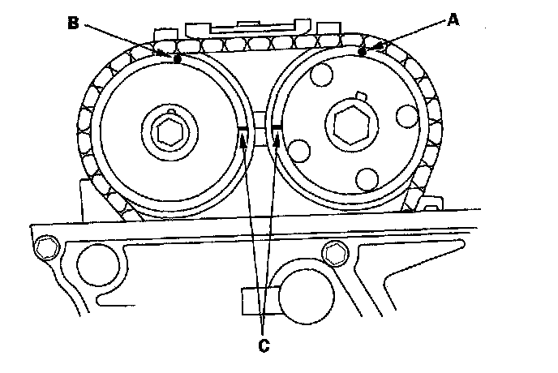
7. Remove the oil cooler hose joint pipe from the water pump.
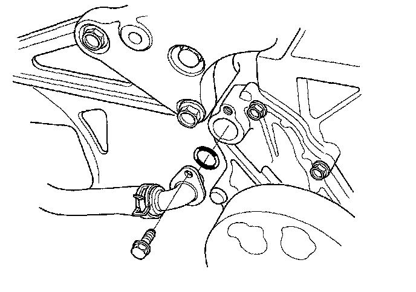
8. Disconnect the crankshaft position (CKP) sensor connector (A) and VTC oil control solenoid valve connector (B).
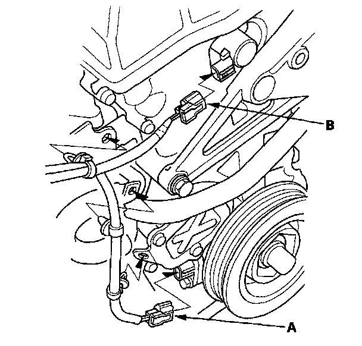
9. Remove the VTC oil control solenoid valve.
10. Remove the crankshaft pulley.
11. Support the engine with a jack and a wood block under the oil pan.
12. Remove the upper torque rod (A).
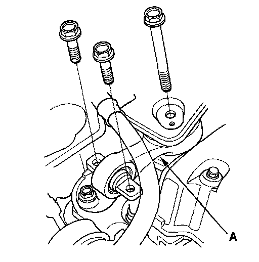
13. Remove the ground cable (A), then remove the side engine mount bracket (B).
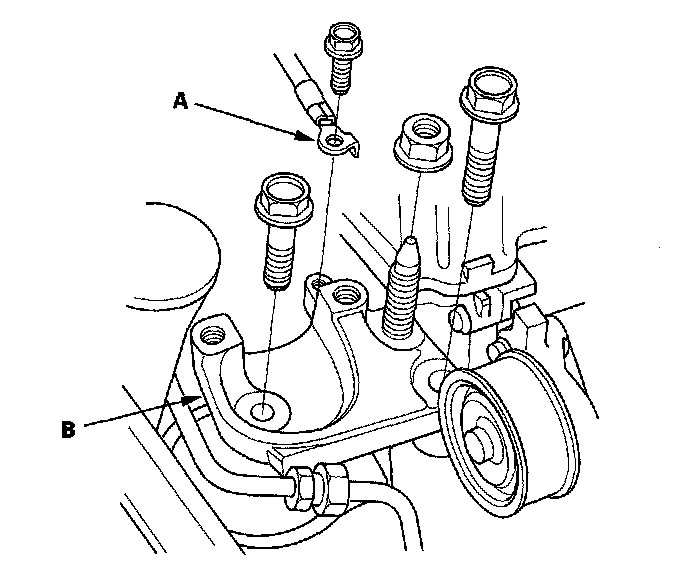
14. Remove the side engine mount bracket.
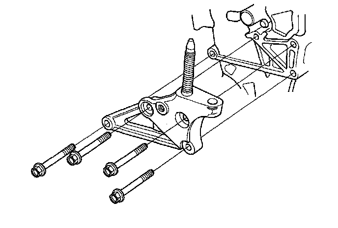
15. Remove the cam chain case.
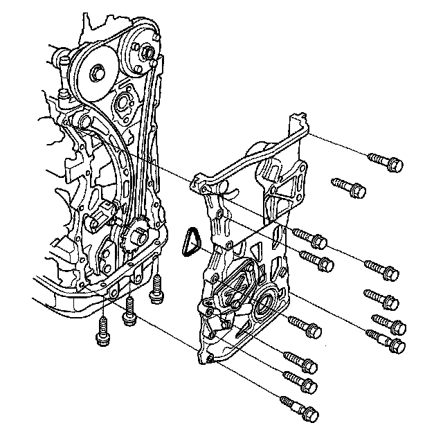
16. Loosely install the crankshaft pulley.
17. Turn the crankshaft counterclockwise to compress the auto-tensioner.
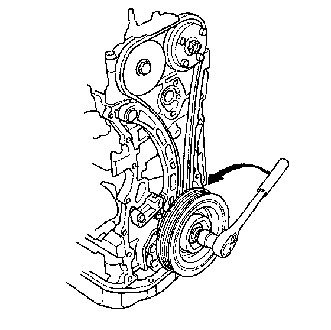
18. Align the holes on the lock (A) and the auto-tensioner (B), then insert a 1.2 mm (0.05 in.) diameter pin or lock pin (P/N 14511-PNA-003) (C) into the holes. Turn the crankshaft clockwise to secure the pin.
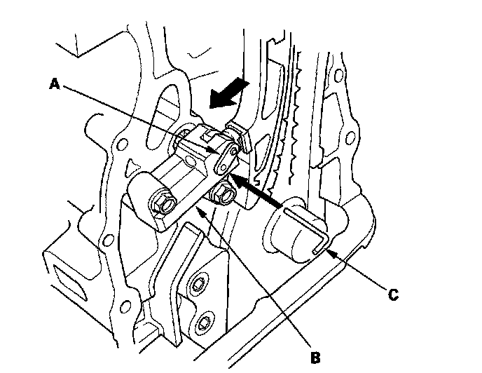
19. Remove the auto-tensioner.
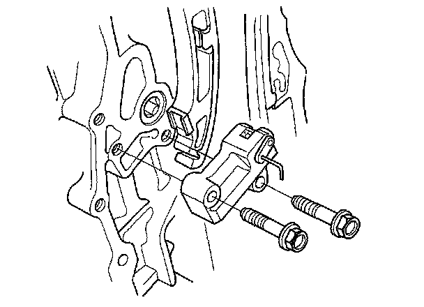
20. Remove the cam chain guide B.
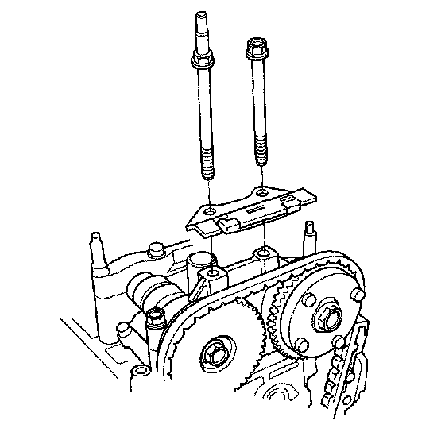
21. Remove the cam chain guide A (A) and tensioner arm (B).
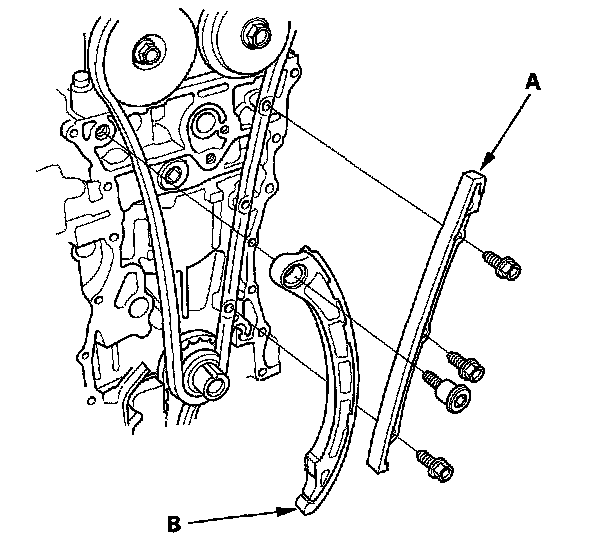
22. Remove the cam chain.